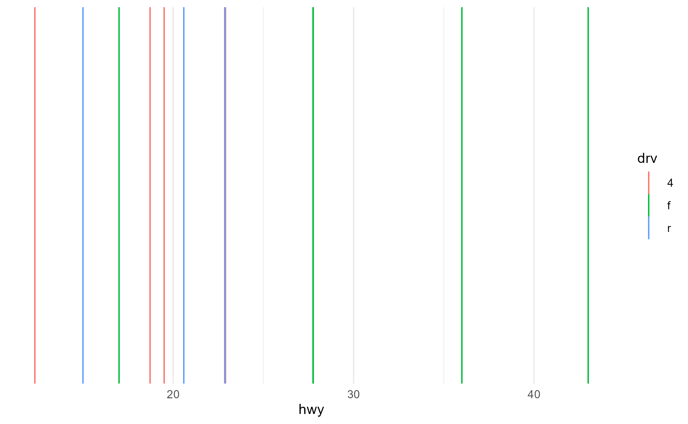

This vignette is a detailed walk-through of an exploratory debugging workflow with {ggtrace}, using a Github issue opened on the {ggxmean} package by Gina Reynolds.
Setup
If you would like to follow along, you can install the version of the {ggxmean} package containing the bug that this vignette will address:
remotes::install_github("EvaMaeRey/ggxmean@cbb909cee7d4f0a4395722020a75330641e5f54c")
library(ggxmean)The issue
{ggxmean} is a {ggplot2} extension package that offers many features, including the layer geom_x_mean() which can be used to draw a line at the mean value of the variable represented by the x-axis.
ggplot(mpg, aes(x = hwy)) +
geom_histogram() +
geom_x_mean()
#> `stat_bin()` using `bins = 30`. Pick better value with `binwidth`.geom_x_mean() works smoothly with groups and facets, as we might expect from our experience with ggplot.
ggplot(mpg, aes(x = hwy, group = drv)) +
geom_histogram() +
geom_x_mean() +
facet_wrap(~drv)
#> `stat_bin()` using `bins = 30`. Pick better value with `binwidth`.However, something somewhat unexpected happens when we pass map a discrete variable to an aesthetic that is not understandable by geom_x_mean(). Despite the fact that the lines do not understand the fill aesthetic, the aesthetic mapping of fill = drv nevertheless highjacks the calculation of grouping for geom_x_mean()
ggplot(mpg, aes(x = hwy, fill = drv)) +
geom_histogram() +
geom_x_mean()
#> `stat_bin()` using `bins = 30`. Pick better value with `binwidth`.Making a reprex
To isolate the problem, let’s remove geom_histogram() from the examples.
Here is a reprex (reproducible example) of the issue:
ggplot(mpg) +
aes(x = hwy, fill = drv) +
geom_x_mean()
We can pinpoint and formalize the issue with the help of layer_data(). We see that in both our expected group = drv and unexpected fill = drv cases, we end up with three unique groups (lines) as indicated by the values in the group column.
p <- ggplot(mpg) +
aes(x = hwy) +
geom_x_mean()
layer_data(p + aes(group = drv))
#> x group PANEL colour size linetype alpha
#> 1 19.17476 1 1 black 0.5 1 NA
#> 2 28.16038 2 1 black 0.5 1 NA
#> 3 21.00000 3 1 black 0.5 1 NA
layer_data(p + aes(fill = drv))
#> fill x PANEL group colour size linetype alpha
#> 1 #F8766D 19.17476 1 1 black 0.5 1 NA
#> 2 #00BA38 28.16038 1 2 black 0.5 1 NA
#> 3 #619CFF 21.00000 1 3 black 0.5 1 NAHere are some more examples to the point:
# Expected cases
layer_data(p + aes(color = drv))$group
#> [1] 1 2 3
layer_data(p + aes(group = drv))$group
#> [1] 1 2 3
# Unexpected cases
layer_data(p + aes(shape = drv))$group # Expected: 1 group
#> [1] 1 2 3
layer_data(p + aes(fill = fl, color = drv))$group # Expected: 3 groups for `drv`
#> [1] 1 2 3 4 5 6 7 8 9 10 11 12Debugging the issue with {ggtrace}
Step 1 - Locating where group is assigned
As our very first step, let’s see where the groups are being calculated and added to the data by inspecting ggplot_build(), the main engine behind ggplot.
If this is your first exposure to ggplot_build(), you just need to know that its output is basically what’s returned by layer_data() that we demoed above.
layer_data
#> function (plot, i = 1L)
#> {
#> ggplot_build(plot)$data[[i]]
#> }
#> <bytecode: 0x0000000020cd2d60>
#> <environment: namespace:ggplot2>We use ggbody() function from {ggtrace} to grab the body of ggplot_build() as a list, and pick out the steps where the data gets transformed.
build_pipeline <- ggbody(ggplot2:::ggplot_build.ggplot)
data_assigns <- sapply(build_pipeline,
function(x) {
rlang::is_call(x) &&
!is.null(rlang::call_name(x)) &&
rlang::call_name(x) == "<-" &&
rlang::call_args(x)[[1]] == "data"
}
)
which(data_assigns)
#> [1] 8 9 11 12 13 17 18 19 21 22 26 29 30 31After each data transformation step (steps + 1L), let’s log the data for the first (and only) layer of our reprex plot.
ggtrace(
method = ggplot2:::ggplot_build.ggplot,
trace_steps = which(data_assigns) + 1, # After each data transformation step ...
trace_exprs = quote(data[[1]]), # ... return the data for the first layer
verbose = FALSE
)
#> `ggplot2:::ggplot_build.ggplot` now being traced.
# plot not printed for space
p + aes(fill = drv)
#> Triggering trace on `ggplot2:::ggplot_build.ggplot`
#> Untracing `ggplot2:::ggplot_build.ggplot` on exit.
tracedump1 <- last_ggtrace()Here, tracedump1 is a list of what data looked like after each data-transformation step inside ggplot_build(). We can now map over every element of the list to see where the group column was first present.
group_present1 <- sapply(tracedump1, function(x) {
"group" %in% colnames(x) && sort(unique(x$group)) == 1:3
})Step 12 of ggplot_build() seems to be where group is computed and assigned
which(data_assigns)[min(which(group_present1))]
#> [1] 12
ggbody(ggplot2:::ggplot_build.ggplot)[[12]]
#> data <- by_layer(function(l, d) l$compute_aesthetics(d, plot))As we can see from the step, it calls the compute_aesthetic for every layer (that’s what the by_layer() function is doing - it was defined in Step 7).
Let’s now repeat the same process inside Layer$compute_aesthetic - where does group get computed and assigned?
ggtrace(
method = ggplot2:::Layer$compute_aesthetics,
trace_steps = seq_along(ggbody(ggplot2:::Layer$compute_aesthetics)),
trace_exprs = quote(~step),
verbose = FALSE
)
#> `ggplot2:::Layer$compute_aesthetics` now being traced.
# plot not printed for space
p + aes(fill = drv)
#> Triggering trace on `ggplot2:::Layer$compute_aesthetics`
#> Untracing `ggplot2:::Layer$compute_aesthetics` on exit.
tracedump2 <- last_ggtrace()
group_present2 <- sapply(tracedump2, function(x) {
"group" %in% colnames(x) && sort(unique(x$group)) == 1:3
})Step 21 of Layer$compute_aesthetic seems to be where this happens. Here, it calls an unexported internal utility function called add_group(), and if we look at the source code we can confirm that we have indeed located where group is calculated and assigned.
min(which(group_present2))
#> [1] 21
ggbody(ggplot2:::Layer$compute_aesthetics)[[21]]
#> evaled <- add_group(evaled)But that only gets us half-way there to solving the issue because we can’t modify the Layer ggproto - it’s also unexported! Plus, we want to change the behavior for geom_x_mean() specifically, such that the aesthetics that it can’t understand are ignored for the calculation of its own groups, but not for the groups of other layers.
Step 2 - Locating the extension point
At this point, we have to hunt down the next time Layer dispatches a Stat or Geom ggproto method with the transformed data after group is calculated, so that we can undo the grouping calculation inside Stat/Geom as necessary (since those ggproto classes are exported).
Going back to ggplot_build(), the next l$<method> call after l$compute_aesthetics is the compute_statistic method at Step 18
ggbody(ggplot2:::ggplot_build.ggplot)[[18]]
#> data <- by_layer(function(l, d) l$compute_statistic(d, layout))Let’s see what ggproto methods the Layer$compute_statistic method calls
ggbody(ggplot2:::Layer$compute_statistic)
#> [[1]]
#> `{`
#>
#> [[2]]
#> if (empty(data)) return(new_data_frame())
#>
#> [[3]]
#> self$computed_stat_params <- self$stat$setup_params(data, self$stat_params)
#>
#> [[4]]
#> data <- self$stat$setup_data(data, self$computed_stat_params)
#>
#> [[5]]
#> self$stat$compute_layer(data, self$computed_stat_params, layout)The next time the data gets transformed after being passed to Layer$compute_statistic is by the setup_data method of the layer’s Stat ggproto at Step 4.
ggbody(ggplot2:::Layer$compute_statistic)[[4]]
#> data <- self$stat$setup_data(data, self$computed_stat_params)Let’s see what kind of information we have at this stage, and whether the information is sufficient for us to implement our desired design change to geom_x_mean()
Step 2.1 - Inspecting the setup_data method
First, let’s figure out what the Stat ggproto for geom_x_mean() is
class(geom_x_mean()$stat)[1]
#> [1] "StatXmean"And let’s inspect its setup_data method
ggbody(ggxmean:::StatXmean$setup_data) # errors!
#> Error: Method 'setup_data' is not defined for `ggxmean:::StatXmean`
#> Check inheritance with `ggbody(ggxmean:::StatXmean$setup_data, inherit = TRUE)`It looks like setup_data is inherited from a parent ggproto (the only candidate here from looking at its class() is the Stat ggproto). If we decied to change the behavior of setup_data for StatXmean, we’ll need to define its own version of the method.
For now, let’s get the inherited method with inherit = TRUE and proceed with inspecting its behavior. Here we confirm that StatXmean indeed inherits Stat$setup_data
ggbody(ggxmean:::StatXmean$setup_data, inherit = TRUE)
#> Returning `ggbody(Stat$setup_data)`
#> [[1]]
#> `{`
#>
#> [[2]]
#> dataOkay so this method just returns the data by default. But what does this look like in practice?
Step 2.2 - Logging the execution of Stat$setup_data
The following is a shorthand for creating a trace that simply returns the output of the last step of the method:
ggtrace(Stat$setup_data, -1, verbose = FALSE)
#> `Stat$setup_data` now being traced.
# plot not printed for space
p + aes(fill = drv)
#> Triggering trace on `Stat$setup_data`
#> Untracing `Stat$setup_data` on exit.We see that the data contains information about the supplied aesthetics and the calculated PANEL and group information.
head(last_ggtrace()[[1]])
#> fill x PANEL group
#> 1 f 29 1 2
#> 2 f 29 1 2
#> 3 f 31 1 2
#> 4 f 30 1 2
#> 5 f 26 1 2
#> 6 f 26 1 2This is sufficient information for our purposes.
Step 3 - Developing a solution
Step 3.1 - Devising a plan (pseudo-code outline)
Here’s the plan. Instead of having the setup_data method just return the data it receives, let’s have it check for two conditions:
- Is the group explicitly supplied?
- If so, leave the data alone. Otherwise…
- Are all the discrete variable used to calculate groups understandable by the geom?
- If so, leave the data alone. Otherwise, re-calculate groups by dropping those extraneous variables and passing the data through
add_group()again.
- If so, leave the data alone. Otherwise, re-calculate groups by dropping those extraneous variables and passing the data through
Step 3.2 - Setting up for testing
One of the biggest perks of {ggtrace} is the ability to log the output of the triggered traces. We’ve been seeing a bit of that with last_ggtrace() but we can scale this up.
Using global_ggtrace and persistent tracing with ggtrace(once = FALSE), we can capture what data looks like inside the setup_data method across our two expected and two unexpected cases from our reprex.
global_ggtrace_state(TRUE)
#> Global tracedump activated.
ggtrace(Stat$setup_data, -1, once = FALSE, verbose = FALSE)
#> `Stat$setup_data` now being traced.
#> Creating a persistent trace. Remember to `gguntrace(Stat$setup_data)`!
# plots not printed for space
p + aes(color = drv)
#> Triggering persistent trace on `Stat$setup_data`
p + aes(group = drv)
#> Triggering persistent trace on `Stat$setup_data`
p + aes(shape = drv)
#> Triggering persistent trace on `Stat$setup_data`
p + aes(fill = fl, color = drv)
#> Triggering persistent trace on `Stat$setup_data`
tracedump3 <- global_ggtrace()
tracedump3 <- lapply(tracedump3, `[[`, 1) # simplify
gguntrace(Stat$setup_data)
#> `Stat$setup_data` no longer being traced.
clear_global_ggtrace()
#> Global tracedump cleared.
global_ggtrace_state(FALSE)
#> Global tracedump deactivated.
names(tracedump3) <- c(paste0("expected", 1:2), paste0("unexpected", 1:2))
names(tracedump3)
#> [1] "expected1" "expected2" "unexpected1" "unexpected2"Now tracedump3 holds the value for data from inside setup_data for our four plots of interest.
Step 3.3 - Tackling the problem piece by piece
Part 1 - Check if group is derived
Our first condition for whether group is explicitly supplied is actually very easy to implement.
Going back to Layer$compute_aesthetics, we can see that the PANEL column is assigned first and then the group column is assigned. This means that if group did not already exist, it’d appear to the right of PANEL. But if it did exist before, it’d just be modified in its original position and appear to the left of PANEL.
We can confirm this from our two expected cases:
colnames(tracedump3$expected1) # `aes(color = drv)`
#> [1] "colour" "x" "PANEL" "group"
colnames(tracedump3$expected2) # `aes(group = drv)`
#> [1] "x" "group" "PANEL"We can make a function that checks for the position of the group column relative to the PANEL column, and use our tracedump to validate it
group_is_derived <- function(data) {
is.unsorted(match(c("group", "PANEL"), colnames(data)))
}
group_is_derived(tracedump3$expected1)
#> [1] TRUE
group_is_derived(tracedump3$expected2)
#> [1] FALSEPart 2 - Check if geom can understand all discrete aesthetics
For our second condition, we need to find out which aesthetics our geom can understand.
First, we check what geom geom_x_mean() uses
class(geom_x_mean()$geom)[1]
#> [1] "GeomXline"Then we gather all the aesthetics that it can handle
understandable_aes <- unique(c(
ggxmean:::GeomXline$required_aes,
names(ggxmean:::GeomXline$default_aes),
ggxmean:::GeomXline$optional_aes
))
understandable_aes
#> [1] "x" "colour" "size" "linetype" "alpha"We use this to write a function that returns the discrete variables in the data that cannot be understood by GeomXline.
not_understandable_aes <- function(data) {
discretes <- colnames(data)[sapply(data, ggplot2:::is.discrete)]
discretes <- discretes[!discretes %in% c("group", "PANEL")]
discretes[!discretes %in% c("colour", "size", "linetype", "alpha")] # `understandable_aes` cleaned up and hard-coded
}We then validate the function against our tracedump
Part 3 - Handle the exception
Lastly, in the case where groups were computed using discrete variables mapped to aesthetics that GeomXline doesn’t understand, we want to re-assign groups.
The following function takes the data, strips it of the offending variables/columns, and returns a vector of the new groups
retrained_groups <- function(data) {
not_understandables <- not_understandable_aes(data)
data <- data[!colnames(data) %in% c("group", not_understandables)]
ggplot2:::add_group(data)$group
}This returns us the expected number of groups from our unexpected reprex cases (recall that unexpected2 used to have 12 groups but now has 3 because it’s correctly ignoring the interaction with fill = fl)
Part 4 - Bring it together
Now we melt the functions from Parts 1-3 into a single function that will become our new setup_data method for StatXmean.
setup_data_draft <- function(data) {
if (is.unsorted(match(c("group", "PANEL"), colnames(data)))) {
discretes <- colnames(data)[sapply(data, ggplot2:::is.discrete)]
discretes <- discretes[!discretes %in% c("group", "PANEL")]
not_understandables <- discretes[!discretes %in% c("colour", "size", "linetype", "alpha")]
if (length(not_understandables) > 0) {
dummy_data <- data[!colnames(data) %in% c("group", not_understandables)]
data$group <- ggplot2:::add_group(dummy_data)$group
}
}
data
}We again validate it against our tracedump, and check that it indeed works!
tracedump3_modified <- lapply(tracedump3, setup_data_draft)
lapply(tracedump3_modified, function(x) sort(unique(x$group) ))
#> $expected1
#> [1] 1 2 3
#>
#> $expected2
#> [1] 1 2 3
#>
#> $unexpected1
#> [1] -1
#>
#> $unexpected2
#> [1] 1 2 3*Note that we’re still using unexported ggplot2 functions here like is.discrete and add_group. You’d normally refactor them or copy them over before releasing the fix, but we’ll skip that here for the sake of time.
Step 3.4 - Implementing the solution
We’d like to test this whole solution out as a user-facing layer before we call it a day.
There are just two important pieces here:
We create a ggproto class called StatXmean2 which is an exact copy of StatXmean except it also defines its own
setup_datamethod as we defined above.We create a layer called
geom_x_mean2()which is an exact copy ofgeom_x_mean()except that thestatargument ofggplot2::layer()is StatXmean2
StatXmean2 <- ggplot2::ggproto(
"StatXmean2",
ggplot2::Stat,
setup_data = function(data, params) {
if (is.unsorted(match(c("group", "PANEL"), colnames(data)))) {
discretes <- colnames(data)[sapply(data, ggplot2:::is.discrete)]
discretes <- discretes[!discretes %in% c("group", "PANEL")]
not_understandables <- discretes[!discretes %in% c("colour", "size", "linetype", "alpha")]
if (length(not_understandables) > 0) {
dummy_data <- data[!colnames(data) %in% c("group", not_understandables)]
data$group <- ggplot2:::add_group(dummy_data)$group
}
}
data
},
compute_group = function(data, scales) {
data.frame(x = mean(data$x))
},
required_aes = c("x")
)
geom_x_mean2 <- function(mapping = NULL, data = NULL,
position = "identity", na.rm = FALSE, show.legend = NA,
inherit.aes = TRUE, ...) {
ggplot2::layer(
stat = StatXmean2, geom = ggxmean:::GeomXline, data = data, mapping = mapping,
position = position, show.legend = show.legend, inherit.aes = inherit.aes,
params = list(na.rm = na.rm, ...)
)
}Our final check against our original reprexes shows that it works as intended

p2 + aes(group = drv)
p2 + aes(shape = drv)
p2 + aes(fill = fl, color = drv)
Step 3.5 - Testing the solution
If you want to write tests, we can also check whether solution generalizes to other cases.
Here, we can see it correctly works with facets even when some groups are missing in a facet, so that’s good
p2 +
aes(color = drv) +
facet_wrap(~fl)
And we can also see that it fails the way it should when it’s supplied an explicit group aesthetic but also receives another discrete mapping to color
p2 + aes(group = fl, color = drv)
This is because there’s a unique match between for fl == "c" in drv (drv== "f"), but there are multiple colors (drv categories) mapped to the four other lines (fl categories), so ggplot just gives up and gives you NAs
table(mpg$drv, mpg$fl)
#>
#> c d e p r
#> 4 0 2 6 20 75
#> f 1 3 1 25 76
#> r 0 0 1 7 17
p2 +
aes(group = fl, color = drv) +
geom_label(aes(label = fl, y = 1), stat = StatXmean2)